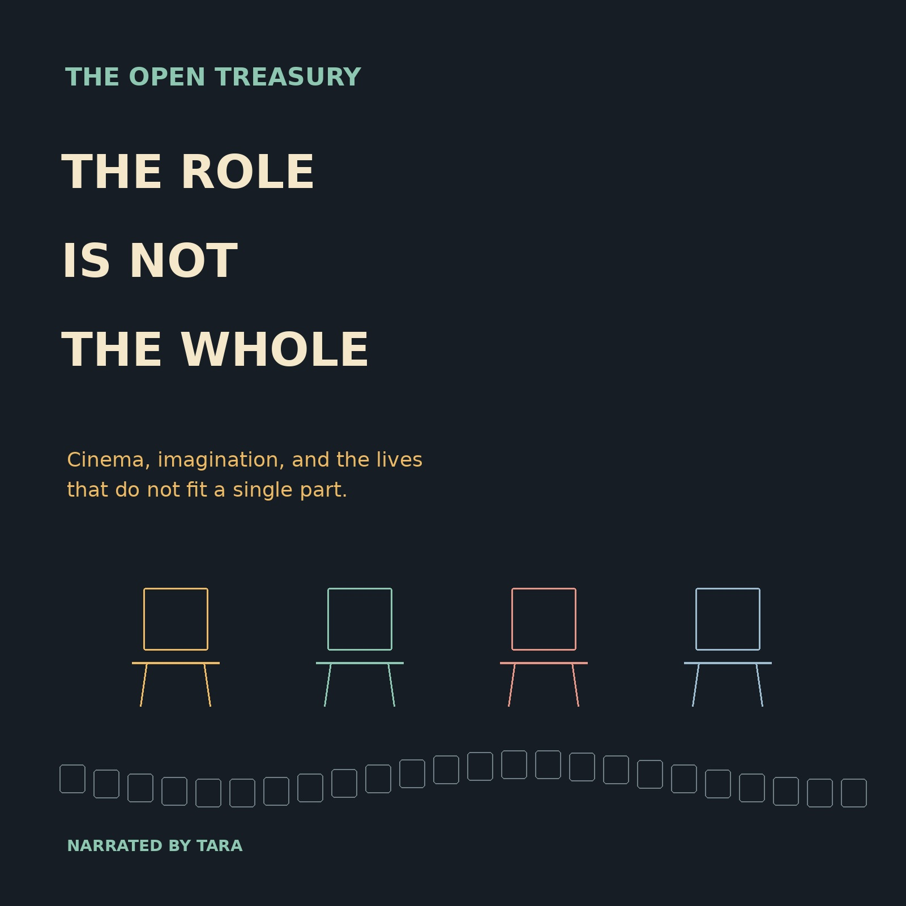

The Role Is Not the Whole
Cinema, imagination, and the lives that do not fit a single part. Eastwood, Chaplin, Carrey, Chan, Bruce Lee, Cage, Pattinson, Yang, Johnnie To and Wai Ka-fai, Scorsese and Tarantino on changing roles, attention and responsibility. Published interviews and archives; short attributed quotes; our interpretations and invented examples labeled. No fresh full-film-viewing claim.
A standalone companion to The Screen Is Not a Self. Different traditions are not interchangeable; other people are not supporting actors in our development. Ordinary facts, safety, suffering and present, revocable consent remain important.
Moving visual edition
Watch the original symbolic animation on YouTube
Chapters
- 00:00 The Chair Behind the Chair
- 02:43 Clint Eastwood Looks Past His Own Close-Up
- 05:16 Chaplin Makes a Film Without the Tramp
- 08:05 The Joke and the Wound
- 10:37 Jim Carrey Leaves the Character. Does Everyone Else?
- 13:35 Jackie Chan Changes the Rhythm
- 16:20 Bruce Lee Is Not a Poster
- 19:05 Nicolas Cage Is Allowed to Be Strange
- 21:42 Robert Pattinson and the Freedom of a Small Frame
- 24:39 Edward Yang Writes to a Friend
- 27:22 Running on Karma Is Not a Victim-Blaming Machine
- 30:14 Scorsese Keeps the Question Open
- 33:07 Tarantino Knows You Know It Is a Movie
- 36:02 The Director Does Not Own the Weather
Sources and complete script
Source, rights and audio notes
Complete spoken script
Rights and narration
Original critical educational commentary and synthetic Aoede narration, with short attributed third-party quotations. Original commentary, narration and animation CC0 only; quotations retain their rights. No blanket license over the combined recording. Not an authorized celebrity course, initiation, clinical advice or attainment test. No film footage, stills, music, interview audio or celebrity likenesses.
Full automated per-clip wording comparison, independent checks on suspected errors, and27assembled join windows checked, not full human-ear or native pronunciation certification. One incomplete clip replaced with a complete exact retake; originals and both retakes retained privately. Specialist names approximate. Podcast MP3 -18.0LUFS/-2.4dBTP. Gain and transparent oversampled peak limiting only, no EQ, pitch or speed change. Fourteen original symbolic moving scenes. Encoded chapter motion, pixels and full decode checked. YouTube delivery960x540/8fps48kbpsAAC; original1280x720/8fps96kbpsAACmaster retained.
Free without ads, paid access, sponsorship or support solicitation.
Got a question? Ask Tara - the best listener questions become short answer episodes.